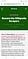

Automatic dump book publishing

Long tail publishing is about publishing a lot of books that will be bought each by small units that will compound to be a huge amount for the publisher but in order for that to work you have to write as many books than you can. Giving advance to writers, writing and editing books are not easy to scale so some dump publishers just use the power of algorithms to scrape content from Wikipedia, blogs and website in order to create automatically dump books that are offered on major books marketplace like Amazon, brands and nobles, abebooks...
Real books written by real person matter a lot not this kind.
